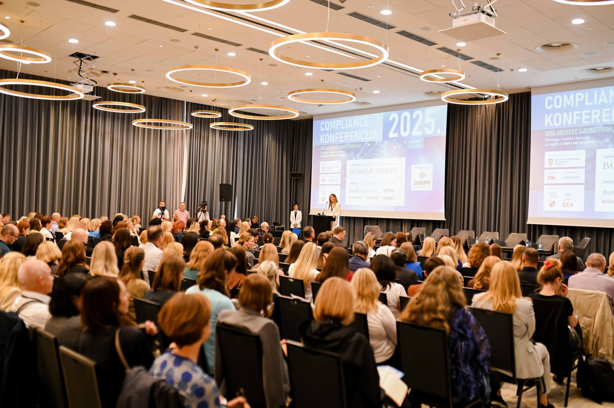

Savjetovanje
Procjenjujemo postojeće stanje, razvijamo sustave i pomažemo ih primijeniti u poslovanju.
Istražite savjetovanje →Pomažemo organizacijama razviti sustave usklađenosti, upravljanja rizicima i organizacijsku kulturu integriteta. Povezujemo međunarodne standarde, iskustvo stvarne implementacije i razumijevanje poslovanja kako bismo stvorili rješenja koja funkcioniraju u praksi.
Od strateškog savjetovanja i implementacije do edukacije i praktičnih rješenja.
Procjenjujemo postojeće stanje, razvijamo sustave i pomažemo ih primijeniti u poslovanju.
Istražite savjetovanje →Razvijajte kompetencije kroz otvorene, certifikacijske i in-house programe.
Pronađite edukaciju →Podrška za povjerljivo prijavljivanje nepravilnosti i odgovorno postupanje.
Pogledajte rješenja →Svakoj organizaciji pristupamo prema njezinim rizicima, procesima i poslovnim ciljevima. Naše preporuke ne završavaju na dokumentaciji.
Jasna slika postojećeg stanja i prioriteti za poboljšanje.
Saznajte više →ISO standardi integrirani u stvarne poslovne procese.
Saznajte više →Jasne odgovornosti, program rada i učinkovito izvještavanje.
Saznajte više →Povezivanje strategije, rizika i kontrola za kvalitetnije odluke.
Saznajte više →Objektivna procjena učinkovitosti i spremnosti sustava.
Saznajte više →Od definiranih vrijednosti do ponašanja koja ih potvrđuju.
Saznajte više →Naša prednost proizlazi iz kombinacije specijaliziranog znanja, iskustva stvarne implementacije i neposrednog razumijevanja organizacije kojoj savjetujemo.
Od compliancea, upravljanja rizicima i poslovne etike do međunarodnih certifikacijskih programa. Odaberite otvorenu edukaciju ili s nama oblikujte program za svoju organizaciju.
Pregled tema i aktualnih termina.
ISO 37301, ISO 37001, ISO 31000 i GDPR.
Programi prema industriji, odgovornostima i stvarnim izazovima.
Zašto dobri ljudi ponekad donose loše odluke? Istražite kako autoritet, pritisci, organizacijska kultura i nesvjesni obrasci razmišljanja utječu na poslovne odluke. Interaktivni program prilagođavamo vašoj industriji i sudionicima.
Saznajte više o edukacijiPreuzimamo zaprimanje i postupanje po prijavama nepravilnosti te pritužbama vezanima uz zaštitu dostojanstva radnika.
Istražite VoiceUP →Anonimno prijavljivanje nepravilnosti i strukturirano postupanje po prijavama.
Istražite IntegrityLine →Naše iskustvo obuhvaća organizacije iz privatnog i javnog sektora, uključujući financije, farmaceutsku industriju, energetiku, građevinarstvo, IT i proizvodnju. Radimo u različitim regulatornim i organizacijskim okruženjima.
Detaljnije informacije o relevantnim referencama dostupne su na zahtjev, uz poštovanje povjerljivosti pojedinih angažmana.
Naše iskustvoCODUPO Compliance konferencija povezuje stručnjake, poslovne lidere i međunarodne organizacije kroz razmjenu iskustava, novih pristupa i praktičnih rješenja.

Pratite novosti iz područja compliancea, upravljanja rizicima, poslovne etike i korporativnog upravljanja te aktivnosti i stručne sadržaje CODUPO-a.


Trebate procjenu postojećeg sustava, podršku u implementaciji ili edukaciju prilagođenu vašem timu? Javite nam se i zajedno ćemo definirati sljedeći korak.